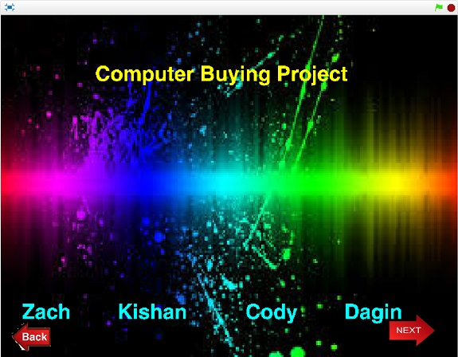
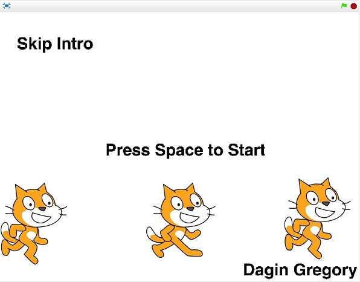

Description: We were tasked with making a program that had unique movements and had all of the letters in our name, and when the green flag was clicked it started and when it was clicked again it would stop and reset..
Concepts Learned:
Using event blocks
Conditional statements
Used loops
Sprites
Movement
Computer Buying Project

Description: We needed to find the best option out of 4 computers, and the requirements were in the price range, and the best computer needed to give the most bang for its buck. We also had to interview someone less experience with computers. We had to give a presentation to the entire class explaining all the options we gave the interviewer, and explain the best option.
Concepts Learned:
Using Spirte Clicked
Coding background
Final Project

Description: This was a project that was meant to showcase all that we’ve learned about coding in scratch thus far inside and outside of the classroom. For instance setting variables and using them for other parts of the code to change something that happens in the game, for example when you get 15 coins the background will change to a you win screen.
Concepts learned:
Using variables and changing them
Going into more advanced programming, like making a game
(I knew most of this already so i barely put any concepts learned)